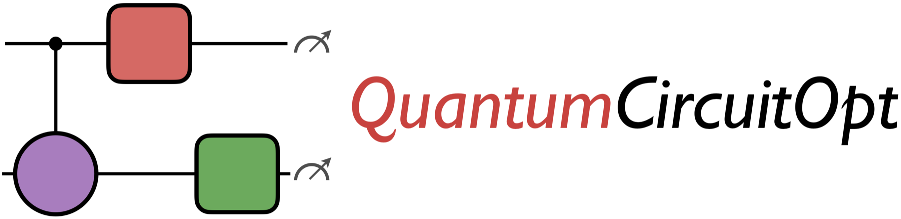

Documentation
Overview
QuantumCircuitOpt is a Julia package that implements discrete optimization methods for provably optimal quantum circuit synthesis. Quantum processors expose restricted, architecture-dependent native gate sets, so a desired unitary operation must be compiled into a sequence of elementary gates that is both functionally correct and economical in scarce quantum resources.
Given a target unitary matrix and a set of available elementary gates, QuantumCircuitOpt formulates the synthesis problem as a mathematical optimization model. It can compute provably optimal exact decompositions (up to machine precision), optimal decompositions up to a global phase, or approximate decompositions. Supported objectives include minimizing circuit depth, CNOT count, and T-gate count.
The elementary gate library supports one- and two-qubit gates as well as multi-qubit operations such as the global rotation gate, which is native to trapped-ion architectures. QuantumCircuitOpt currently supports circuit decompositions involving up to ten qubits. By providing optimality certificates, it is useful for benchmarking heuristic quantum compilers, studying hardware-aware gate sets, and identifying minimum-resource implementations of small but important quantum operations.
Installation
QuantumCircuitOpt requires Julia 1.10 or later. Install the latest registered release from the Julia REPL:
import Pkg
Pkg.add("QuantumCircuitOpt")At least one JuMP-compatible mixed-integer programming solver is also required. Gurobi is recommended for difficult circuit-synthesis instances; IBM CPLEX is also supported. The open-source HiGHS solver is compatible with QuantumCircuitOpt, although commercial solvers may be faster on large instances. Install Gurobi from the Julia package manager with:
import Pkg
Pkg.add("Gurobi")Unit Tests
Run the registered package's tests with:
import Pkg
Pkg.test("QuantumCircuitOpt")Acknowledgement
This work was supported by Los Alamos National Laboratory's LDRD Early Career Research award. The primary developer is Harsha Nagarajan (@harshangrjn).
Citing QuantumCircuitOpt
If you find QuantumCircuitOpt useful in your work, we request you to cite the following publication (IEEE link, arXiv link):
@inproceedings{NagarajanLockwoodCoffrin2021,
title={{QuantumCircuitOpt}: An Open-source Framework for Provably Optimal Quantum Circuit Design},
author={Nagarajan, Harsha and Lockwood, Owen and Coffrin, Carleton},
booktitle={SC21: The International Conference for High Performance Computing, Networking, Storage, and Analysis},
series={Second Workshop on Quantum Computing Software},
pages={55--63},
year={2021},
doi={10.1109/QCS54837.2021.00010},
organization={IEEE Computer Society}
}A detailed version of the mixed-integer programming framework is available in this paper:
@misc{nagarajan2025provablyoptimalquantumcircuits,
title={Provably Optimal Quantum Circuits with Mixed-Integer Programming},
author={Harsha Nagarajan and Zsolt Szabó},
year={2025},
eprint={2510.00649},
archivePrefix={arXiv},
primaryClass={quant-ph},
url={https://arxiv.org/abs/2510.00649},
}Another publication which explores the potential of non-linear programming formulations in the QuantumCircuitOpt package is the following (IEEE link, arXiv link):
@inproceedings{HendersonNagarajanCoffrin2022,
title={Exploring Non-linear Programming Formulations in {QuantumCircuitOpt} for Optimal Circuit Design},
author={Henderson. R, Elena and Nagarajan, Harsha and Coffrin, Carleton},
booktitle={SC22: The International Conference for High Performance Computing, Networking, Storage, and Analysis},
series={Third Workshop on Quantum Computing Software},
pages={36--42},
year={2022},
doi={10.1109/QCS56647.2022.00009},
organization={IEEE Computer Society}
}